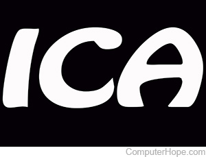

<!DOCTYPE html>
<html lang="en">
<head>
    <meta charset="UTF-8">
    <meta name="viewport" content="width=device-width, initial-scale=1.0">
    <link rel="stylesheet" href="./(ICAS)style.css">
    <title>Wonhyuk ICA02</title>
</head>
<body>
    
        <!-- <header>

            <p>1. font has been activated wtih <mark>'Space Mono'</mark></p>

        </header>
        
        <nav>

            <a href="#">a tag first</a>
            <a href="#" style=" color:chartreuse; font-size: larger;" >Second-Last-a font size:larger, color: chartreuse</a>
            <a href="#">A tag last</a>
        </nav>

        <section>
               <h1>Aligned Center(H1)</h1>
               <h2>only h1 and h5 tag has been aligned center(H2)</h2>
               <h3>only h1 and h5 tag has been aligned center(H3)</h3>
               <h4>only h1 and h5 tag has been aligned center(H4)</h4>
               <h5>Aligned Center(H5)</h5>

               
            </section>
           


            


            
       
       
        <div>
            <a href=""></a>
        </div> -->

</body>
</html>